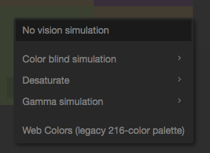

I use the paletton interface for whenever I have to think of a color scheme for my designs. There are several reasons why I would recommend this interface; an overall reason is that the overall design allows the user to focus on the colors and the interaction between them. This is based on the fact that the whole interface besides the color wheel and square is dark gray. In terms of function, the controls in upperleft hand corner allows the user to think of how many colors a designer can work with. One can choose monocromatic (one hue) or one can choose a tetratic (four hues) scheme. If one chooses to work with more than one color for example a triadic scheme, then the interface can allow one to change the hues by dragging the little circles along the outer ring.
However, the some of the most useful feature paletton has would be located on the right side of the picture. The dominating visual of this side of the interface is the square with multiple squares of varying sizes located at the bigger square’s corners. These smaller squares show the hue’s tints. By using this visual, a designer can analyze the interaction of colors whenever dealing with a multi-color scheme. Also, since designers have to think of how color look to people who cannot see colors the same as most people, paletton has a feature that allows the designer to see what the color-blinded people see.
